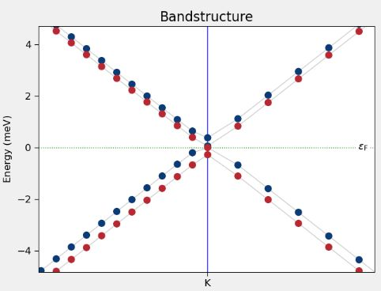

Build the system
Define the material, composition, and interface geometry behind the question.
RESEARCH / FROM ATOMS TO APPLICATIONS
Exploring how structure, composition, and neighboring layers influence the electronic behavior of materials.
CURRENT DOCTORAL RESEARCH
My doctoral work explores graphene interfaced with V-doped WSe₂.
Working with Dr. Dinh Loc Duong at the University of Maine, I use density functional theory and high-performance computing to investigate how interfaces affect low-energy electronic states and valley-resolved behavior.
The quantum anomalous Hall effect is a research motivation. This ongoing project does not claim its experimental or computational demonstration.
Explore the project ↗
THE RESEARCH PROCESS
Define the material, composition, and interface geometry behind the question.
Assess basis choices, k-point sampling, and numerical convergence.
Study band structures, density of states, and interaction-related features.
Connect the electronic response with the underlying materials behavior.
PUBLISHED WORK
BACHELOR’S PROJECT / DIGITAL ELECTRONICS
Explore my undergraduate digital-electronics work: adders, subtractors, logic gates, and flip-flops, with original circuit diagrams and an interactive full adder.
Open Digital Electronics project ↗
Circuit diagrams & interactive demonstration →
EXPERIMENTAL PROJECT
See how I integrated an ultrasonic sensor, servo, and Arduino UNO to locate nearby objects.
Explore the project →2026 PROPOSAL / PRELIMINARY RESULTS
I compared pristine graphene with graphene on WSe₂ using QuantumATK. My proposal reports a small spin–orbit gap below 5 meV near K.


Why it matters: the interface changes graphene’s low-energy electronic states. My longer-term aim is to investigate dissipationless current for low-power electronics through the quantum anomalous Hall effect.
Next steps: add V doping; calculate Berry curvature, Chern numbers, and edge states to test topology; then examine multilayer structures. These are research objectives, not completed findings.
Download my proposal presentation ↓BROWSE THE PRESENTATION
Original slides, including their source attributions. Use Next to browse. Animations are shown as static slides.
CONTACT
Seeking summer 2027 internships · Semiconductor physics · Advanced materials